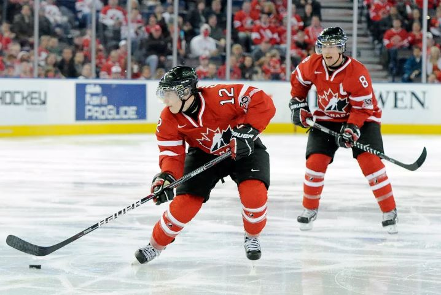
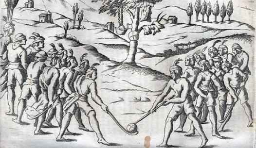
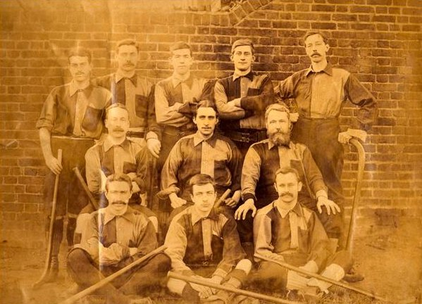

Hockey. Es el juego de pelota y bastón más antiguo que se conoce. Se jugaba en Persia en el año 2000 a.n.e.
El hockey es una familia de deportes en la que dos equipos compiten para llevar una pelota dura o un disco
de caucho a la portería contraria para anotar un tanto con la ayuda de un palo largo llamado stick. Existen
Existen varias modalidades, pero las más importantes son: sobre hielo, sobre patines y sobre hielo.

El Hockey es el deporte de pelota y carrera más antiguo que se conoce. Se dispone de evidencia histórica
que sitúa la práctica de este juego en Persia en el año 2000 antes de nuestra era. En Europa de la Edad Media,
las vidrieras de las catedrales de Canterbury y Glouscester mostraban escenas de hombres jugando con bastones
en forma de Sticks. Durante esa época, en Inglaterra se prohibió la práctica de este juego durante algunos años,
porque representaba una seria competencia al tiro con arco, que en aquel tiempo era la base del sistema de defensa
del país.

Los inicios del hockey como deporte se remontan a los años finales del siglo XIX. El primer club de hockey, el
Blackheath Football and Hockey Club en el sureste de Londres, se creó en el año 1861, desde la década de 1840. Los
primeros grupos se formaron en Gran Bretaña, donde surgió la Unión Nacional de Hockey, situada en la región de Bristol
de 1887 a 1895. El órgano nacional oficial, la asociación Amateur Hockey , se fundó en Londres en 1886. Al principio se
se desarrolló como un deporte propiamente británico, y posteriormente se difundió por el resto del mundo, cuando los
soldados y colonos lo exportaron por todo el Imperio Británico. La mayor parte de las naciones con equipos superiores en
esta disciplina fueron en alguna ocasión parte de dicho imperio, por ejemplo la India, Pakistán, Nueva Zelanda e Inglaterra.

| index | pagina 2 | pagina 3 |